Наука · журнал «ДентАрт» 2015 №1 (78)
Від єдності до різноманіття форм у природі
FROM UNITY TO THE VARIETY OF FORMS IN NATURE
Навколишній світ різноманітний, багатогранний, багатоликий! У природі спостерігається величезна різноманітність об’єктів, зовнішній вигляд яких варіює від скромних до високодиференційованих форм. Однак незважаючи на фантастичну кількість об’єктів, що зустрічаються у природі, існують загальні закономірності в їх утворенні, побудові, функціонуванні.4, 8, 12 Оперуючи знаннями, включаючи просторове мислення, бачення навколишнього світу і логіку, можна розглянути будь-яку структуру, споруду з точки зору законів єдності і різноманіття форм у природі.
Багато років наша увага була прикута до анатомічних особливостей зубів, у тому числі до ікла, його габаритних контурів, багатогранності поверхонь, мікрорельефу та інших тонкощів об’єкта.5 На наш погляд, форма коронкової частини ікла нагадує форму кисті людини (рис. 1).
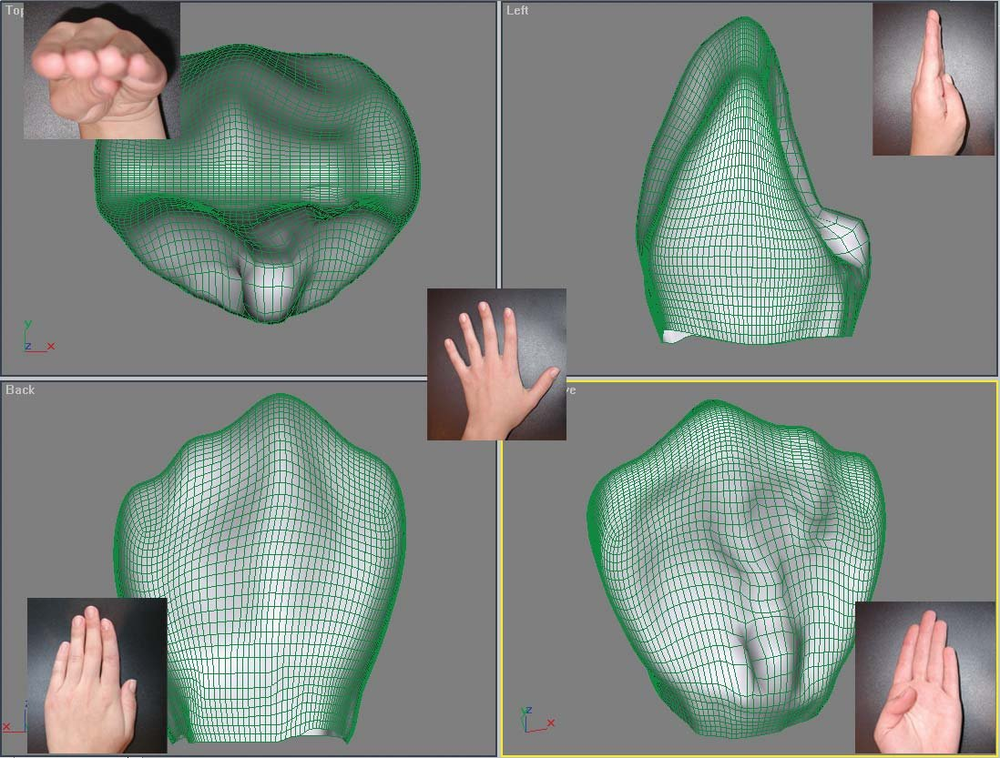
При детальному розгляді коронкової частини ікла (рис. 2, 3, 4) відзначається наявність у ньому мамелонів (емалево-дентинових валиків), які об’єднані між собою і складають його основу: 1 — основний ведучий поздовжній валик, 2 — крайовий, більш опуклий медіальний валик, 3 — крайовий вигнутий S-подібно дистальний валик і 5 — додатковий дистальний валик. Ближче до ріжучої третини зуба мамелони виражені чіткіше, в серединній і пришийковій третині вони зливаються між собою, утворюючи екватор коронки. Між основним, крайовими і додатковим валиками існують заглиблення (6 — медіальне, 7 — дистальне). Заглиблення мають трикутні форми з витягнутими вздовж середньої третини вершинами та основами, зверненими до ріжучого краю. Через ріжучий край коронкової частини ікла всі перераховані вище валики і заглиблення переходять на внутрішню поверхню (піднебінну або язичну).
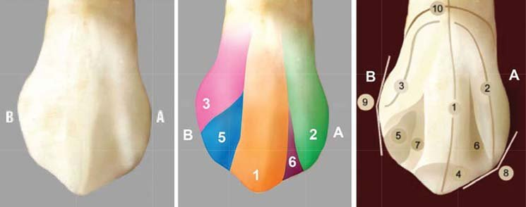
Провідні валики і заглиблення на вестибулярній поверхні (рис. 5, 6) поєднуються з відповідними валиками і заглибленнями піднебінної поверхні (1 — крайовий медіальний валик, 2 — основний поздовжній валик, 3 — крайовий дистальний валик, 4 — додатковий дистальний валик) (рис. 7, 8). Біля основи коронкової частини ікла з оральної поверхні є невелике підвищення, яке становить у подальшому піднебінний або язичний горбик і має самостійну вершину.
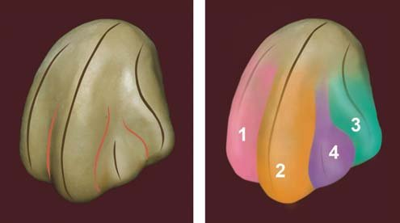
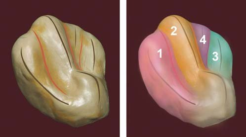
Спільність будови ікла і кисті людини
Якщо детально розглянути будову кисті людини і провести аналогію з морфологічними особливостями коронкової частини ікла людини, то можна відзначити загальні закономірності у будові цих органів. Форма кисті нагадує також п’ятикутник з нерівномірними гранями, де вершиною, яка виступає найбільше, є вершина середнього пальця, що відповідає рвучому горбикові ікла (рис. 9).
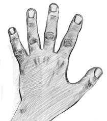
У кисті також існують основні морфологічні ланки у вигляді пальців, що відповідає основним морфологічним утворенням в іклі — емалево-дентиновим валикам (рис. 10, 11). Тільки в кисті пальці відокремлені один від одного, вільні, розмежовані простором в її дистальному відділі, а в коронковій частині ікла емалево-дентинові валики розташовуються разом. Об’єднуються пальці лише в центрі кисті, де шкіра, підшкірножирова клітковина, м’язи, фасції долоні й інші анатомічні утворення ставлять єдиний «футляр» (рис. 12). Якщо провести порівняння між основними морфологічними утвореннями кисті й ікла, то вказівному пальцеві відповідає крайовий медіальний валик (1), середньому — основний поздовжній валик (2), безіменному — додатковий дистальний валик (4), мізинцеві — крайовий дистальний валик (3) (рис. 13, 14). Великий палець кисті бере участь у побудові піднебінного або язикового горбика.
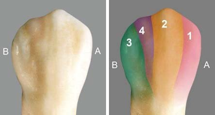
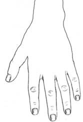
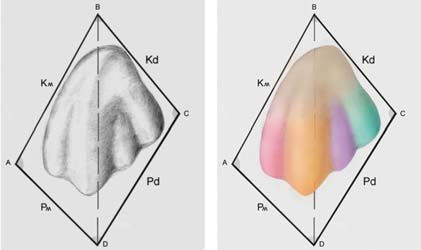
Контактні поверхні ікла і країв кисті також мають спільність будови. Основа ікла в зоні шийки зуба досить масивна. Дистальна поверхня ікла представлена крайовим дистальним валиком (3), додатковим дистальним горбиком (4), основним поздовжнім валиком з чітко вираженим рвучим горбиком (1), піднебінним горбиком (5) (рис. 15).
Аналогічно до профілю ікла можна розглянути профіль кисті (медіальний край), в якому крайовому дистальному валику (3) відповідає медіальний край кисті з мізинцем, додатковому дистальному горбику (4) — безіменний палець, основному подовжньому валику — середній палець. Вершині піднебінного горбика (5) відповідає проекція великого пальця (рис. 16).
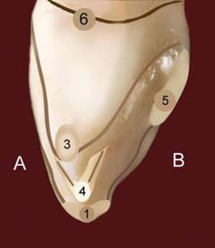
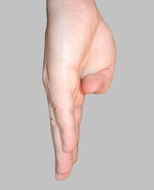
Медальна контактна поверхня ікла обмежується медіальним крайовим валиком і відповідає латеральному краю кисті та вказівного пальця, проглядається також основний поздовжній валик (1), що відповідає середньому пальцю кисті (рис. 17, 18).
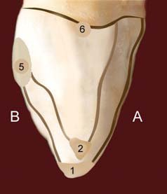
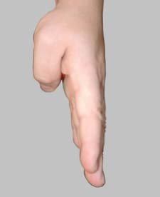
З різних ракурсів проглядається спільність будови кисті та ікла, де основні морфологічні структури (пальці кисті і мамелони ікла) різним чином поєднуються між собою. У кисті пальці ізольовані один від одного на більшому протязі (1/2 дистальної частини долоні), а в іклі емалево-дентинові валики практично об’єднані на всій ділянці коронкової частини зуба, поділ умовний.
Будову руки можна розглянути з точки зору єдиного механізму, що складається з безлічі кісток, зв’язок, м’язів, сухожиль і нервів, які узгоджено працюють для виконання різноманітних і складних рухів. Оскільки кисть — це багатофункціональний орган, то наявність у ньому диференційованого дистального відділу у вигляді пальців багато до чого зобов’язує (захоплення, відрив, утримання якого-небудь предмета та багато інших життєво важливих функцій).
Ікло ж унікальне по-своєму. Воно також — багатофункціональний орган, що складається з емалі, дентину, цементу, судинно-нервового пучка зуба і має безліч різноманітних функцій. Найважливішою з них є функція механічної переробки їжі. Коронкова частина ікла представлена потужним мінеральним конгломератом п’ятикутної форми, вершина якого має рвучий горбик. Функція рвучого горбика полягає у врізанні в підлеглі тканини і протистоянні механічним навантаженням під час відриву шматка їжі («принцип гарпуна»). Потужна коронкова частина зуба плавно переходить у не менш потужний, відносно круглий корінь (рис. 19). Розташовується корінь ікла в альвеолі і підтримується з усіх боків зв’язковим апаратом, що дозволяє йому витримувати досить серйозні фізичні навантаження.
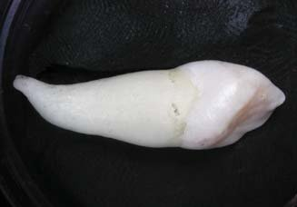
Ікло ми розглядаємо як первинну ланку, фрактальну одиницю в онтогенезі розвитку щелепно-лицьової системи людини у відповідності зі встановленими закономірностями, характерними для модульної (фрактальної) структурної організаціі.5, 10 Знаючи будову ікла, можна розглянути будову будь-якого зуба. Природа першопочатково створила раціональну модель, яка достатньо функціональна, стійка, має цілком чітку структуру, обриси, габаритні форми. Ікла розміщуються на межі певних класів (різці та премоляри). Це межове положення, з одного боку, об’єднує, а з другого — роз’єднує певні функціонально-орієнтовані групи зубів. Визнаючи існування цієї величини, з нею зіставляють усі можливі варіанти будови інших зубів, де певним чином поєднуються, перебувають у композиції (з’єднанні, зв’язку) окремі морфологічні елементи (одонтомери) (рис. 20).
При злитті одонтомерів утворюються багатогорбикові зуби. Знаючи будову одонтомера, можна пояснити макроструктуру будь-яких зубів. Так, наприклад, при редукції рвучого горбика форма ікла нагадує різець.
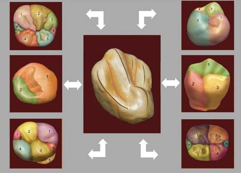
Від ікла до різця та стопи людини
Зверніть увагу на бічний різець, який дивовижним чином нагадує кисть людини, її долонну поверхню (рис. 21, 22), де вказівному пальцю відповідає крайовий медіальний валик (1), середньому пальцю — основний поздовжній валик (2), безіменному пальцю — додатковий дистальний валик (4), мізинцеві — крайовий дистальний валик (3).
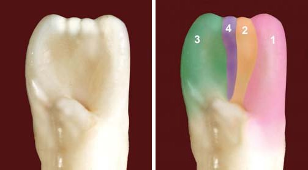
Різець людини (рис. 23, 24), у свою чергу, має величезну схожість зі стопою людини (рис. 25), особливо якщо це різець дитини, який тільки-но прорізався. Спільність будови полягає в тому, що мамелони визначені досить чітко, особливо в ріжучій третині коронкової частини центрального різця, що відповідає пальцям стопи, далі йдуть тіло і пришийкова зона коронки різця, що відповідає «футляру» стопи (рис. 26).
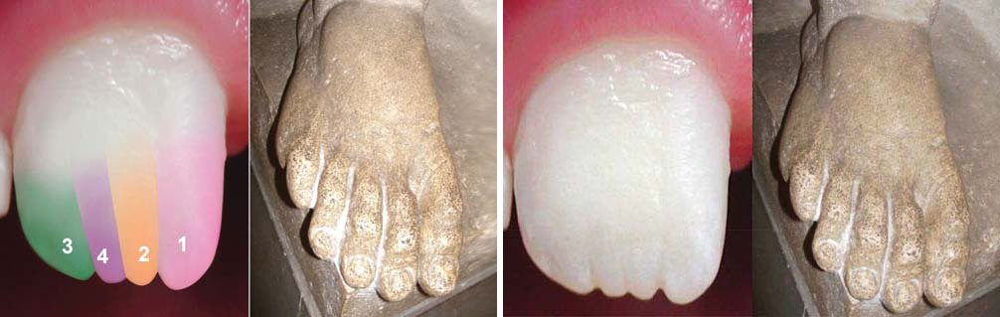
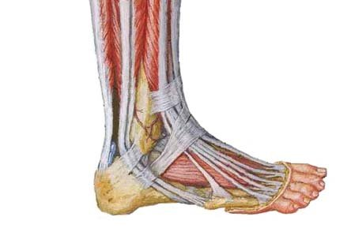
Загальні закони побудови об’єктів у живому організмі існують, і ми їх бачимо! І як це не парадоксально на перший погляд, але можна провести аналогію у морфології форм дистальних відділів скелету кінцівок людини (кисть і стопа) як складових опорно-рухового апарату і зубів як складових зубощелепного апарату, також його дистальних відділів.
Спільність будови зуба, кисті і стопи в ембріогенезі людини
Дивовижна схожість між різними органами людини (верхні і нижні кінцівки, зуби) виявляється і в процесі її ембріогенезу. Світлини відомого шведського фотографа Ленарта Нільсона демонструють ембріональний період онтогенезу людини. Що ж до закладання кінцівок, то вони з’являються на третьому (верхня кінцівка) і четвертому (нижня кінцівка) тижні внутрішньоутробного розвитку у вигляді складок з боків тіла зародка, що нагадують плавники риб. Складки розширюються, і утворюються пластинки (зачатки кисті і стопи) (рис. 27).
На 2-му місяці ембріогенезу помітний подальший розвиток елементів майбутніх кінцівок у порядку від дистальної ланки до проксимальної: спочатку мовби виростають кисть і стопа, потім передпліччя і гомілка, останніми — плече і стегно. У закладки кінцівок дуже рано вростають нервові стовбури і кровоносні судини (рис. 28).7 Аналогічним чином можна розглянути розвиток і формування зуба. Спочатку прорізується немовби дистальна ланка (коронкова частина зуба), і лише потім іде процес росту і формування проксимальної ланки (кореня зуба); з моменту прорізування зуба необхідно додати в середньому 2 роки, щоб дочекатися апексогенезу кореня. У зачатках зубів також від самого початку є нервові стовбури і кровоносні судини.
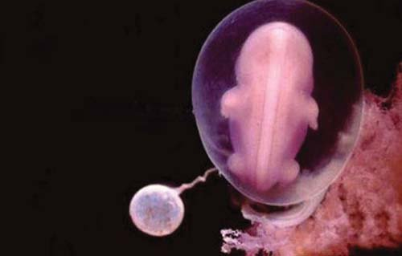
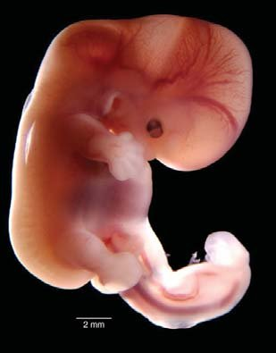
Цікаво зазначити, що до 9 тижня внутрішньоутробного розвитку людини пальці рук і ніг окреслені, але ще не розділені один від одного. Форми кисті і стопи зародка нагадують форму ластів або кінцівки жаби (рис. 29, 30). Уже виділено основні морфологічні одиниці у вигляді пальців, але поділ їх ще умовний, існує якась «перетинка», що об’єднує пальці в ділянках як кисті, так і стопи.
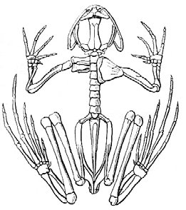
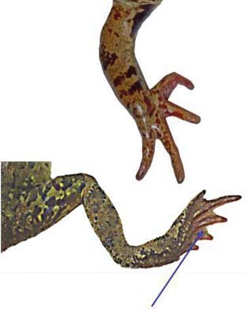
Лише до 16 тижня внутрішньоутробного розвитку людини формуються кінцівки з пальцями і нігтями. Диференціація пальців відбулася (рис. 31).
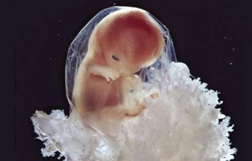
Таким чином, на етапі закладання, формування, росту і розвитку певних органів (кистей, стоп і зубів) зародка людини проглядається деяка спільність їх будови, внутрішня впорядкованість морфологічних ланок (пальці, емалево-дентинові валики), яка описується універсальним законом світобудови — «золотою пропорцією».9-11, 13, 14 Тільки основні морфологічні ланки коронкової частини зуба, емалево-дентинові валики (мамелони) в зубі об’єднані в потужний функціональний орган, наприклад ікло, мінералізація якого сягає в середньому 87% (з урахуванням мінералізації емалі — 98%, мінералізації дентину — 72%). Емалево-дентинові валики протягом усього життя об’єднані в коронковій частині ікла в єдиний, досить потужний і стійкий конгломерат, перебувають у загальній функціонально-фізіологічній зв’язці. Адже іклові треба витримувати великі навантаження протягом усього життя індивідуума.
У кисті або ж стопі ця внутрішня єдність між основними морфологічними ланками (пальцями), виявляється, теж існує, але не такий тривалий час, до 16 тижня внутрішньоутробного розвитку людини перетинки повністю зникають і формуються кінцівки з пальцями і нігтями, відбувається етап диференціації пальців (рис. 32). Ми розуміємо, що сформовані стопи і кисті мають свої анатомічні форми і призначені виконувати зовсім інші функції в організмі.
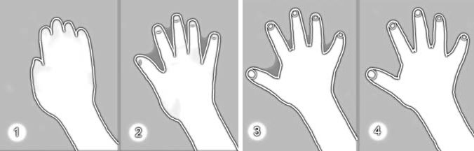
Конкресцентна теорія та еволюція зубощелепного апарату
Яким же було наше здивування, коли ми побачили шліфи молярів на фотографіях, які зробили к.м.н. Станіслав Геранін (Україна) (рис. 33, 34) і асистент кафедри терапевтичної стоматології Дмитро Погадаєв (рис. 35)! Під кожним горбиком моляра лежало ікло, під кожним горбиком простежувалися основні емалево-дентинові валики, характерні для будови ікла, з обрисами у вигляді «ластів», «рукавички», кисті людини, жаб’ячої кінцівки.
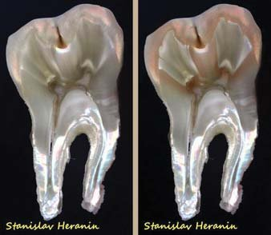
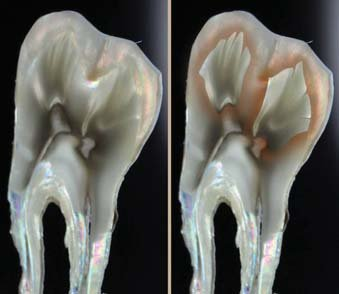
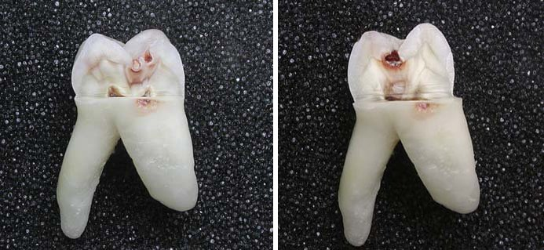
Спільність форм простежується на різних системних і органних рівнях. Виходить, що теорія злиття зубних зачатків (конкресцентна теорія), яку запропонували у 1892 році вчені-ембріологи Резі, Кюкенталь,1 де розглядалися закономірності формоутворення зубів у процесі вдосконалення зубощелепної системи живих організмів, має право на існування і підтверджена об’єктивно. На нинішній момент розроблено методологічні підходи до створення унікальних шліфів, ми маємо рідкісні світлини зубів, що об’єктивно підтверджують цю теорію.
На думку вчених Резі, Кюкенталя, жувальний апарат пройшов тривалий шлях розвитку від хрящових риб до людини. Зуби костистих риб мають однакову форму (гомодонтна система). Кількість їх значно варіює, вони змінюються протягом усього життя. До передверхньощелепної, піднебінної кісток, а також до верхньої і нижньої щелеп зуби фіксуються щільною зв’язкою, яка просякнута вапном. Демонструється зубощелепний апарат щуки, де показано приклад гомодонтної системи (рис. 36).
У процесі еволюції йдуть посилені процеси редукції — диференціації та на зміну примітивному зубощелепному апарату риб, амфібій і рептилій приходить новий вторинний жувальний апарат ссавців. Цей жувальний апарат набуває нових ознак: з’являються групи зубів, що розташовуються в нових осередках, зменшується кількість зубів і кількість їх змін. Розвиток зубів ссавців іде в напрямку їх диференціювання як за формою, так і за функцією (гетеродонтна система). Захоплення і розрізання їжі призводить до диференціації різців, а розривання їжі — до утворення ікол. Подрібнення і перетирання їжі перетворює ряд зубів на корінні. Для поділу їжі на фрагменти, прокусування шкури жертви у хижаків особливого розвитку досягають різці та ікла.
Демонструється зубощелепний апарат лисиці (рис. 37), ведмедя (рис. 38), де показано приклад гетеродонтної системи.
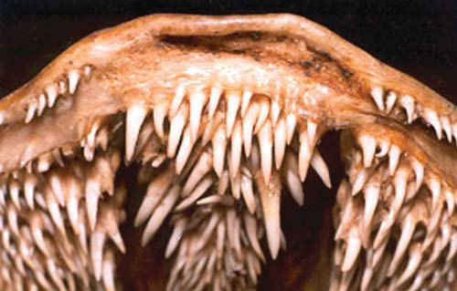
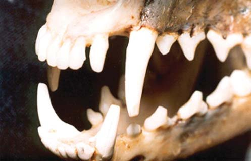
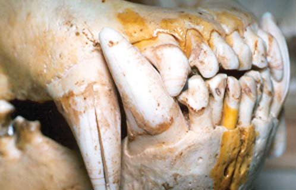
Б. С. Матвєєв (1961), розвиваючи цю теорію, виявив і охарактеризував структурно-функціональну одиницю зуба — одонтомер, який становить собою гомолог простого конічного зуба нижчих представників тваринного царства і включає коронку, корінь і порожнину.2 Типовим за структурою одонтомера є ікло. Ікло, виходячи з вчення про морфогенетичні поля Дальберга, — ключовий зуб, досить стабільна ланка в зубощелепній системі людини.1 Гіпотезу про формування багатокореневих зубів людини доповнюють сучасні наукові уявлення про розвиток зубів людини у процесі філогенезу. Дослідження Г.Г. Манашева (2005) дозволяють пояснити мінливість морфології коронки і особливості кореневої системи багатокореневих зубів сучасної людини.6
Таким чином, у природі існує величезна кількість химерних форм, оригінальних композицій, геніальних утворень, де досить раціонально працюють усі ланки єдиного механізму, де немає нічого зайвого, а всі елементи існуючої системи перебувають у тісній взаємодії між собою з метою досягнення кінцевого результату.
З точки зору філогенезу живих істот, ікла зливаються між собою у процесі формоутворення багатогорбикових зубів. Нове переконливе підтвердження цієї конкресцентної теорії демонструють шліфи молярів, де під кожним горбиком лежить ікло. Завдяки певній методиці фотофіксації шліфа у поляризаційному світлі (рис. 33, 34) на поздовжньому зрізі моляра проектується малюнок у вигляді «рукавички», ікла або мамелонів (емалево-дентинових валиків), що закінчується в межах дентину, а саме під горбиками зуба.
Ці факти дають нам підставу зробити висновок про існування фрактального принципу в будові твердих тканин зубів. Видатний Леонардо да Вінчі говорив, що «гармонія складається не інакше, як загальний контур обіймає окремі члени, з чого народжується людська краса». Емаль же багатогорбикового зуба, охоплюючи дентин, об’єднує між собою систему горбиків (ікол), що прагнуть до борозни першого порядку. Сама емаль, швидше за все, умовно позбавлена поділу на мамелони. У подальших наукових дослідженнях потрібне покрокове вивчення поперечних і поздовжніх шліфів емалі, її мікроархітектоніки, щоб конкретизувати факт наявності або відсутності в ній будь-яких ущільнень, контрфорсів. Можна припустити, що скелетом зуба, його підтримкою є саме остови дентину, чергування посиленого і ослабленого малюнків контурів мамелонів, які підтримують внутрішню макроструктуру зуба. Верхівки мамелонів проектуються у вигляді вершин горбиків у проекції жувальної поверхні коронкової частини зуба, тим самим підтримуючи зуб і беручи на себе величезні навантаження, амортизуючи стреси і врівноважуючи тиск від різних механічних, хімічних і фізичних факторів впливу зовнішнього середовища.
Клінічне застосування: реконструкція форми зуба
Унікальні фото шліфів багатогорбикових зубів продемонстрували нам єдність і різноманіття форм як у природі, так і в людському організмі. Гармонія існує одвічно. Гармонія природи, на наш погляд, зумовлена поєднанням певних геометричних форм, які пов’язані одна з одною. Таким чином, загальний еволюційний план у будові кисті, стопи, зуба існує. Ця подібність знаходить вияв уже на етапі ембріо-гістогенезу людини.
Відновлюючи зуби, стоматологи мають чітко уявляти анатомію органів і тканин порожнини рота, вивчати їх філогенез, антропогенез, онтогенез, ембріо-гістогенез, щоб реконструювати відсутні тканини у їх первозданному вигляді, у гармонії. Реставратори повинні максимально наблизитися до природних форм і створити таку конструкцію зуба, яка задовольняла б і лікаря, і пацієнта як за формою, так і за функцією.
Демонструється клінічний випадок послідовного відновлення коронкової частини моляра з урахуванням конкресцентної теорії формоутворення зубів (рис. 39-41). Представлена реконструкція зуба з урахуванням модульних технологій, де як первинна ланка, фрактал, модуль, який бере участь у заповненні простору, розглядається ікло. Крок за кроком укладається композиційна маса у вигляді ікол, які поступово збільшуються і прагнуть до фісур першого порядку, тим самим заповнюючи вільний простір у зоні дефекту зуба.
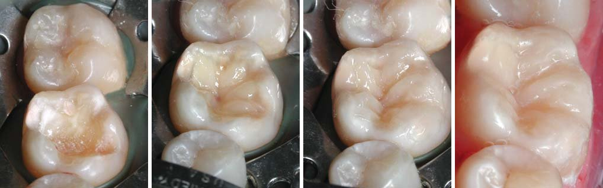
Наша діяльність здійснюється в реальному часі, а процес заповнення простору не хаотичний, а чітко обґрунтований, керований, логічний, послідовний, багатофункціональний.3 Мінімум енергетичних затрат за гідного кінцевого результату. Без гідного внутрішнього змісту немає гармонійних зовнішніх форм (єдність внутрішньої конструкції і зовнішньої поверхні об’єкта).
Література
- Зубов А.А. Одонтология / А.А. Зубов. – М., 1968. – 199 с.
- Дмитриенко С.В. Анатомия зубов человека / С.В. Дмитриенко, А.И. Краюшкин, М.Р. Сапин. – М.: Медицинская книга; Н.Новгород: Изд-во НГМА. – 2000. – 196 с.
- Леонтьев В.К. Развитие философских представлений в лечении кариеса зубов / В.К. Леонтьев, В.Б. Недосеко, Л.М. Ломиашвили, Л.Г. Аюпова // Институт стоматологии. – 2008. – №3 (40). – С. 10-12.
- Лима-де-Фариа А. Эволюция без отбора: Автоэволюция формы и медицины. М.: Изд-во «Мир»/Пер с англ./, 1991.
- Ломиашвили Л.М. Искусство моделирования и реставрации зубов / Л.М. Ломиашвили, Л.Г. Аюпова, Д.В. Погадаев, С.Г. Михайловский. – Омск: Полиграф, 2014. – 436 с.: ил.
- Манашев Г.Г. Гипотеза формирования многокорневых зубов человека / Г.Г. Манашев, А.В. Селиванов // Сибирский стоматологический вестник. – 2005. – №3. – С. 4-6.
- Пивченко П.Г. Эмбриогенез систем органов человека. (Учебно-методическое пособие) / П.Г. Пивченко, М.И. Богдановой, О.Б. Башлак и др. – Белорусский государственный медицинский университет. Кафедра нормальной анатомии. – Минск, 2007. – 49 с.
- Постолаки А.И. Общие принципы в структуре растений и зубов. Международный журнал экспериментального образования. – № 11 (часть 1). – 2013. – С. 102-103.
- Постолаки А.И. Фрактальная организация челюстно-лицевой системы человека в онтогенезе. Успехи современного естествознания. – № 1. – 2014. – С. 13-15.
- Постолаки А.И. Золотая пропорция и развитие эмали зубов. Международный журнал экспериментального образования. – № 3. – 2014. – С. 170-171.
- Huntley H. E. The Divine Proportion: a Study in Mathematical Beauty. – Dover Publication, 1970. – Р. 186.
- Doczi G. The power of limits. Proportional harmonies in Nature, Art and Architecture. – London, Schambala Boulder, 1981. – Р. 300.
- Livio M. The Golden Ratio: The Story of PHI, the World's Most Astonishing Number. – N.Y., Broadway Books, 2002. – Р. 290.
- Navon D. The sisters of the golden section / D. Navon // Perception. – 2011. – V. 40, – № 6. – Р. 705-724.